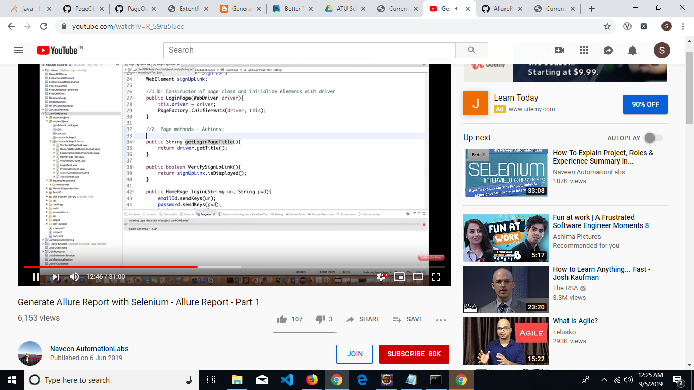

Reflections of Visionary Minds

The following table lists down the Sequential Steps during the Run
TestCase Name: TC_005 : Iteration 1
Time Taken for Executing: 12 Sec
Current Run Number: Run 8 Method Type: Test Method
TestCase Name: TC_005 : Iteration 1
Time Taken for Executing: 12 Sec
Current Run Number: Run 8 Method Type: Test Method
Requirement Coverage/ TestCase Description
Requirement Coverage/Build Info/Cycle - Description
Execution Platform Details
| O.S | : | Windows 10, amd64Bit, v10.0 |
| Java | : | 1.8.0_221 |
| Hostname | : | LP-5CD9176L77 |
| Selenium | : | 3.141.59 |
Summary
| Status | : | Failed |
| Execution Date | : | 05-Sep-2019 12:25:17 |
| Browser | : | chrome,v76.0.3809.132 |
Author Info
| Author Name | : | Unknown |
| Creation Date | : | Unknown |
| Version | : | Unknown |
| System User | : | User1 |
| S.No | Step Description | Input Value | Expected Value | Actual Value | Time | Line No | Status | Screen shot |
|---|---|---|---|---|---|---|---|---|
| 1 | INfo Step | 1 Sec | 107 |  |
||||
| 2 | Pass Step | 302 Milli Sec | 109 |  |
 |
{kind=link}
{kind=link}
Reason for Failure: No such Element exists With "xpath" = "/html/body/div/h1/a"} (Session info: chrome=76.0.3809.132) For documentation on this error, please visit: https://www.seleniumhq.org/exceptions/no_such_element.html Build info: version: '3.141.59', revision: 'e82be7d358', time: '2018-11-14T08:17:03' System info: host: 'LP-5CD9176L77', ip: '192.168.0.122', os.name: 'Windows 10', os.arch: 'amd64', os.version: '10.0', java.version: '1.8.0_221' Driver info: org.openqa.selenium.chrome.ChromeDriver Capabilities {acceptInsecureCerts: false, browserName: chrome, browserVersion: 76.0.3809.132, chrome: {chromedriverVersion: 76.0.3809.68 (420c9498db8ce..., userDataDir: C:\Users\User1\AppData\Loca...}, goog:chromeOptions: {debuggerAddress: localhost:55370}, javascriptEnabled: true, networkConnectionEnabled: false, pageLoadStrategy: normal, platform: XP, platformName: XP, proxy: Proxy(), setWindowRect: true, strictFileInteractability: false, timeouts: {implicit: 0, pageLoad: 300000, script: 30000}, unhandledPromptBehavior: dismiss and notify} Session ID: 9c9ea14d6e428ed7f6920d20abaf7f61 *** Element info: {Using=xpath, value=/html/body/div/h1/a
Click Me to Show/Hide the Full Stack Trace
org.openqa.selenium.NoSuchElementException: no such element: Unable to locate element: {"method":"xpath","selector":"/html/body/div/h1/a"}
(Session info: chrome=76.0.3809.132)
For documentation on this error, please visit: https://www.seleniumhq.org/exceptions/no_such_element.html
Build info: version: '3.141.59', revision: 'e82be7d358', time: '2018-11-14T08:17:03'
System info: host: 'LP-5CD9176L77', ip: '192.168.0.122', os.name: 'Windows 10', os.arch: 'amd64', os.version: '10.0', java.version: '1.8.0_221'
Driver info: org.openqa.selenium.chrome.ChromeDriver
Capabilities {acceptInsecureCerts: false, browserName: chrome, browserVersion: 76.0.3809.132, chrome: {chromedriverVersion: 76.0.3809.68 (420c9498db8ce..., userDataDir: C:\Users\User1\AppData\Loca...}, goog:chromeOptions: {debuggerAddress: localhost:55370}, javascriptEnabled: true, networkConnectionEnabled: false, pageLoadStrategy: normal, platform: XP, platformName: XP, proxy: Proxy(), setWindowRect: true, strictFileInteractability: false, timeouts: {implicit: 0, pageLoad: 300000, script: 30000}, unhandledPromptBehavior: dismiss and notify}
Session ID: 9c9ea14d6e428ed7f6920d20abaf7f61
*** Element info: {Using=xpath, value=/html/body/div/h1/a}
at sun.reflect.NativeConstructorAccessorImpl.newInstance0(Native Method)
at sun.reflect.NativeConstructorAccessorImpl.newInstance(NativeConstructorAccessorImpl.java:62)
at sun.reflect.DelegatingConstructorAccessorImpl.newInstance(DelegatingConstructorAccessorImpl.java:45)
at java.lang.reflect.Constructor.newInstance(Constructor.java:423)
at org.openqa.selenium.remote.http.W3CHttpResponseCodec.createException(W3CHttpResponseCodec.java:187)
at org.openqa.selenium.remote.http.W3CHttpResponseCodec.decode(W3CHttpResponseCodec.java:122)
at org.openqa.selenium.remote.http.W3CHttpResponseCodec.decode(W3CHttpResponseCodec.java:49)
at org.openqa.selenium.remote.HttpCommandExecutor.execute(HttpCommandExecutor.java:158)
at org.openqa.selenium.remote.service.DriverCommandExecutor.execute(DriverCommandExecutor.java:83)
at org.openqa.selenium.remote.RemoteWebDriver.execute(RemoteWebDriver.java:552)
at org.openqa.selenium.remote.RemoteWebDriver.findElement(RemoteWebDriver.java:323)
at org.openqa.selenium.remote.RemoteWebDriver.findElementByXPath(RemoteWebDriver.java:428)
at org.openqa.selenium.By$ByXPath.findElement(By.java:353)
at org.openqa.selenium.remote.RemoteWebDriver.findElement(RemoteWebDriver.java:315)
at sun.reflect.NativeMethodAccessorImpl.invoke0(Native Method)
at sun.reflect.NativeMethodAccessorImpl.invoke(NativeMethodAccessorImpl.java:62)
at sun.reflect.DelegatingMethodAccessorImpl.invoke(DelegatingMethodAccessorImpl.java:43)
at java.lang.reflect.Method.invoke(Method.java:498)
at org.openqa.selenium.support.events.EventFiringWebDriver.lambda$new$1(EventFiringWebDriver.java:105)
at com.sun.proxy.$Proxy6.findElement(Unknown Source)
at org.openqa.selenium.support.events.EventFiringWebDriver.findElement(EventFiringWebDriver.java:194)
at com.qa.ING.LiveOakBank_TestScripts.LoginPageOakBank_Test.TC_005(LoginPageOakBank_Test.java:112)
at sun.reflect.NativeMethodAccessorImpl.invoke0(Native Method)
at sun.reflect.NativeMethodAccessorImpl.invoke(NativeMethodAccessorImpl.java:62)
at sun.reflect.DelegatingMethodAccessorImpl.invoke(DelegatingMethodAccessorImpl.java:43)
at java.lang.reflect.Method.invoke(Method.java:498)
at org.testng.internal.MethodInvocationHelper.invokeMethod(MethodInvocationHelper.java:124)
at org.testng.internal.Invoker.invokeMethod(Invoker.java:583)
at org.testng.internal.Invoker.invokeTestMethod(Invoker.java:719)
at org.testng.internal.Invoker.invokeTestMethods(Invoker.java:989)
at org.testng.internal.TestMethodWorker.invokeTestMethods(TestMethodWorker.java:125)
at org.testng.internal.TestMethodWorker.run(TestMethodWorker.java:109)
at org.testng.TestRunner.privateRun(TestRunner.java:648)
at org.testng.TestRunner.run(TestRunner.java:505)
at org.testng.SuiteRunner.runTest(SuiteRunner.java:455)
at org.testng.SuiteRunner.runSequentially(SuiteRunner.java:450)
at org.testng.SuiteRunner.privateRun(SuiteRunner.java:415)
at org.testng.SuiteRunner.run(SuiteRunner.java:364)
at org.testng.SuiteRunnerWorker.runSuite(SuiteRunnerWorker.java:52)
at org.testng.SuiteRunnerWorker.run(SuiteRunnerWorker.java:84)
at org.testng.TestNG.runSuitesSequentially(TestNG.java:1208)
at org.testng.TestNG.runSuitesLocally(TestNG.java:1137)
at org.testng.TestNG.runSuites(TestNG.java:1049)
at org.testng.TestNG.run(TestNG.java:1017)
at org.apache.maven.surefire.testng.TestNGExecutor.run(TestNGExecutor.java:283)
at org.apache.maven.surefire.testng.TestNGXmlTestSuite.execute(TestNGXmlTestSuite.java:75)
at org.apache.maven.surefire.testng.TestNGProvider.invoke(TestNGProvider.java:120)
at org.apache.maven.surefire.booter.ForkedBooter.invokeProviderInSameClassLoader(ForkedBooter.java:386)
at org.apache.maven.surefire.booter.ForkedBooter.runSuitesInProcess(ForkedBooter.java:323)
at org.apache.maven.surefire.booter.ForkedBooter.main(ForkedBooter.java:143)